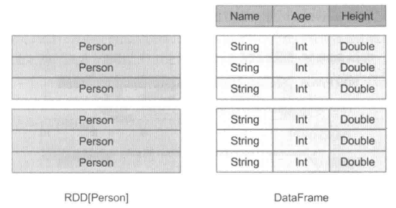
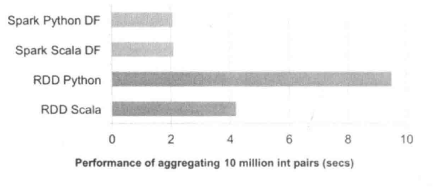
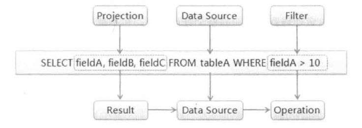

Spark SQL 简介
Spark SQL是spark1.0版本中加入的组件，是Spark生态系统中最活跃的组件之一。它能够利用Spark进行结构化数据的存储和操作，结构化数据既可以来自外部结构化数据源（当前支持Hive、JSON和Parquet等操作，Spark1.2版本开始对JDBC/ODBC等的支持），也可以通过向已有RDD增加Schema的方式得到。
DataFrame/Dataset介绍
Spark的RDD API 比传统的MapReduce API 在易用性有了巨大的提升，但是对于没有MapReduce和函数式变成经验的新手，RDD Api还是存在一定的门槛。另一方面，数据分析人员所使用的R和Pandas等传统数据分析工具虽然提供只管的API，却由于这些工具只能处理单机的数据，无法胜任大数据处理任务。为了解决这两个问题，从Spark SQL 1.3版本开始在原有SchemaRDD的基础上提供了与R和Pandas风格类似的DataFrame Api，新的DataFrameAPi降低了学习门槛，还支持了Scala，java和python
在Spark中，DataFrame是一种以RDD为基础的分布式数据集，类细雨传统数据库汇总的二维表哥。与RDD的主要区别在于；前者带有Schema源数据，即DataFrame所表示的二维表数据集的每一列都带有名称和类型。由于无法知道RDD数据集内部的结构，SPark作业执行只能在调度阶段层面进行简单通用的优化，而对于DataFrame带有数据集内部的结构，可以根据这些信息进行针对性的优化。

DataFrame优点
代码简洁
DataFrame最大的优点之一就是能够使用更精简的代码。代码量Hadoop MapReduce>Python RDD API>Python DataFrame API。
提升执行效率
Python DataFrame API相对于Python RDD API的执行效率有了5倍的提升，这是因为DataFrame API实际上仅仅组黄了一段体积小巧的逻辑查询计划，Python端只需要将查询计划发送到JVM端即可，计算任务的大头都有JVM端负责。使用Python RDD API时，Python VM和JVM之间需要进行大量跨进程数据交换。
使用Scala DataFrame API的版本也要比Python RDD API快一倍，因为PYthonRDD API是函数试的，强调不变形，在大部分场景下倾向于创建新对象而不是修改老对象，这点岁软可以实现整洁的API，但使得SPark在应用程序运行过程中倾向创建大量临时对象，对GC造成较大压力。而在Spark SQL 中尽可能重用对象，这样虽然在内部打破了不变形，但在数据返回给用户时，还会重新转化为不可变数据，这样用户利用DataFrame API能能够使用到优化效果。
减少数据存取
分析大数据最有效的方法就是忽略无关的数据，根据查询条件进行适当的裁剪。对一些格式，Spark SQL可以根据数据文件中附带的统计信息来进行剪枝。在这类数据格式中，数据是分段保存的，每段数据都带有最大值、最小值和NULL值数量等统计信息。当统计信息表名某一数据段肯定不包括符合查询条件的目标数据时，改数据段就可以直接跳过（例如某整数列A某段的最大值为100，而查询条件要求a>200）
Spark SQL 运行原理
通用SQL执行原理
在传统关系型数据库中，最基本的SQL查询语句如SELECT fieldA，fieldB，fieldC FROM tableA WHERE fieldA > 10，由Projection（fieldA，fieldB，fieldC）、Data Source（tableA）和Filter（fieldA > 10）三部分组成，分别对应SQL查询过程中的Result、Data Source和Operation。也就是说SQL语句按Result->Data Source->Operation的次序来描述的，
而实际执行SQL语句的过程中是按照Operation->Data Source->Result的顺序来执行。

具体执行过程如下：
- 词法和语法解析（Parse）：对读入的SQL语句进行词法和语法解析，分辨出SQL语句中哪些词是关键词（如SELECT、FROM和WHERE），哪些是表达式、哪些是Projection、哪些是Data Source等，判断SQL语句是否规范，并形成逻辑计划。
- 绑定（Bind）：将SQL语句和数据库的数据字典（列、表和视图等）进行绑定（Bind），如果相关的Projection和Data Source等都存在的话，则表示这个SQL语句是可以执行的。
- 优化（Optimize）：一般的数据库会提供几个执行计划，这些计划一般都有运行统计数据，数据库会在这些计划中选择一个最优计划。
- 执行（Execute）：执行签名的步骤获取的最优执行计划，返回从数据库中查询的数据集。
关系数据库在运行过程中，会在缓冲解析锅的SQL语句，在后续的过程中如果能够命中缓存SQL就可以直接返回可执行的计划，比如重新运行刚运行过的SQL语句，坑你直接从数据库的缓冲池中获取返回结果。
SparkSQL运行架构
Spark SQL先换将SQL语句进行解析（Parse）形成一个Tree，然后使用Rule对Tree进行绑定、优化等处理过程，通过模式匹配对不同类型的节点采用不同的操作。而Spark SQL的查询优化器是Catalyst，他负责处理查询语句的解析、绑定、优化和生成物理计划等过程，Catalyst是Spark SQL最和新部分，其性能优劣将决定整体的性能。
Spark SQL由Core、Catalyst、Hive和Hive-ThriftServer 4个部分组成。
- Core：负责处理数据的输入/输出，从不同的数据源获取数据（如RDD、Parquet文件和JSON文件等），然后将查询结果输出成Data Frame。
- Catalyst：负责处理查询语句的整个处理过程